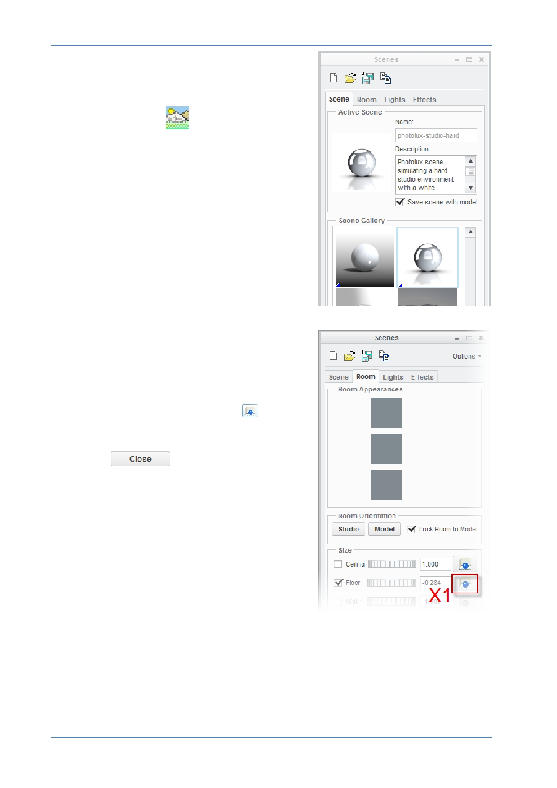

PTC Academic Program
7. Applying a scene:
Click on Scene
to open the Scenes
dialog box.
Scroll through the list of scenes then double
click on Photolux-Studio_Hard to apply it to
your model.
Check/tick the Save scene with model
option.
In the Scenes dialog box, click on the Room
tab.
In the Room Size section, click
at X1 to
align the floor with the bottom of your
assembly.
Click
to finish making changes
to the Scene settings.
© 2012 PTC
Creo Parametric 2.0 Primer
Page 83